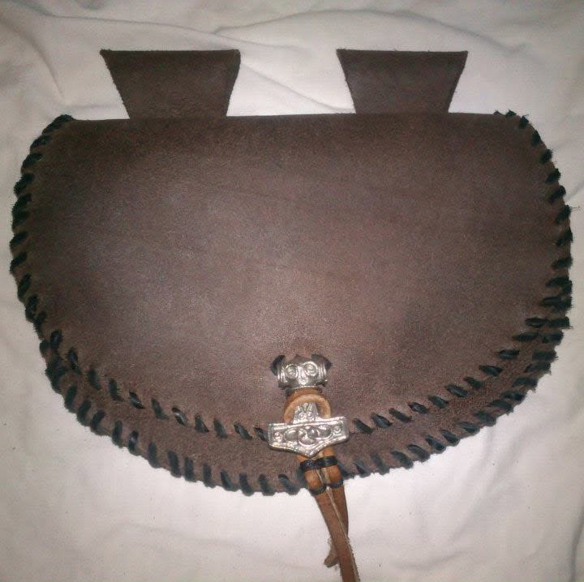
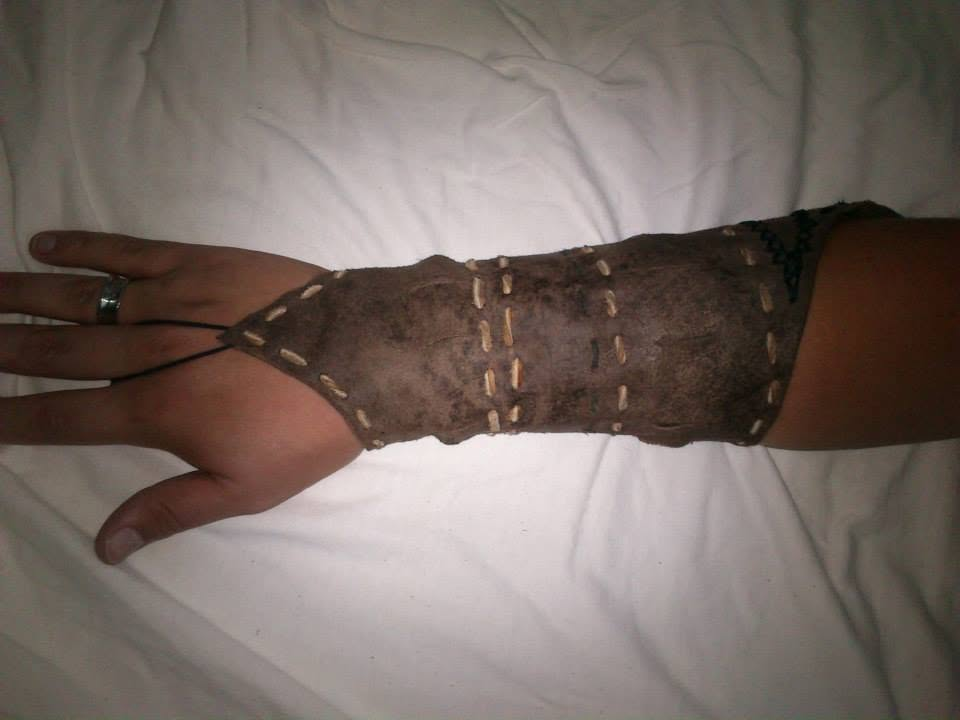
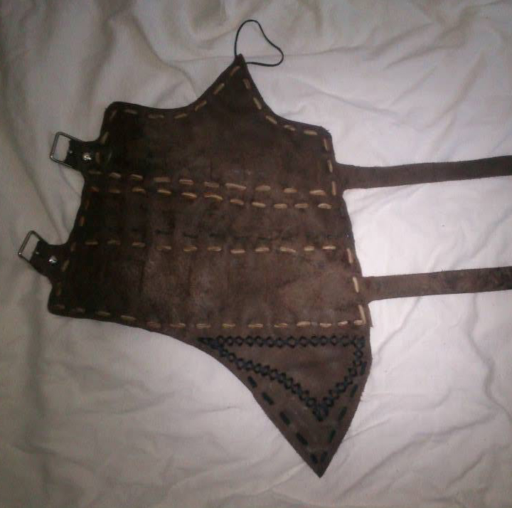

Handmade Calwen
Handmade Calwen nevznikl jako plán. Vznikl náhodou.
Před lety jsem dostala do rukou kus kůže od nejlepšího přítele. V té době jsem se pohybovala mezi LARP hráči a jedním z typických kousků výbavy byla taštice – malá závěsná brašna na opasek.
Tak jsem ji vyrobila.

Bez nákresu. Bez zkušeností. Bez znalosti sedlářského stehu, hranořízku nebo správných nástrojů. Jen podle představy, jak by měla vypadat. Místo klasického zapínání posloužil přívěsek Thorova kladiva a šití nahradil kožený řemínek.
Byla to první věc, kterou jsem vyrobila.
A ono to fungovalo.
Reakce okolí mě překvapila. Začaly přicházet další nápady, první zakázky a projekty pro lidi, které jsem chtěla potěšit. A s každou další věcí jsem zkoušela něco nového.
Něco vyšlo. Něco méně. Něco mě naučilo, že určitý výrobek je skvělý nápad přesně jednou. 😄


Postupně ale vzniklo něco, co už nebyla jen sbírka kožených výrobků. Začal vznikat vlastní způsob práce, vlastní rukopis a nakonec i vlastní svět.
Dnes moje dílna zabírá polovinu pokoje. Pracuji s akrylovými barvami, airbrushem, raznicemi i nástroji pro ruční zdobení kůže.
Každý výrobek vzniká pomalu a ručně. Každý steh, každý reliéf i každá tečka do kůže projde mýma rukama.
A přestože se za ty roky změnilo skoro všechno, jedna věc zůstala stejná:
Pořád mě zajímá, co všechno se dá vytvořit, když se člověk nebojí říct si: „Nikdy jsem to nedělala. Tak to zkusím.“
Tohle je Handmade Calwen.
Ne továrna. Ne pásová výroba. Spíš malá dílna, ve které se pořád něco zkouší.
A někdy z toho vznikne něco, co stojí za to.